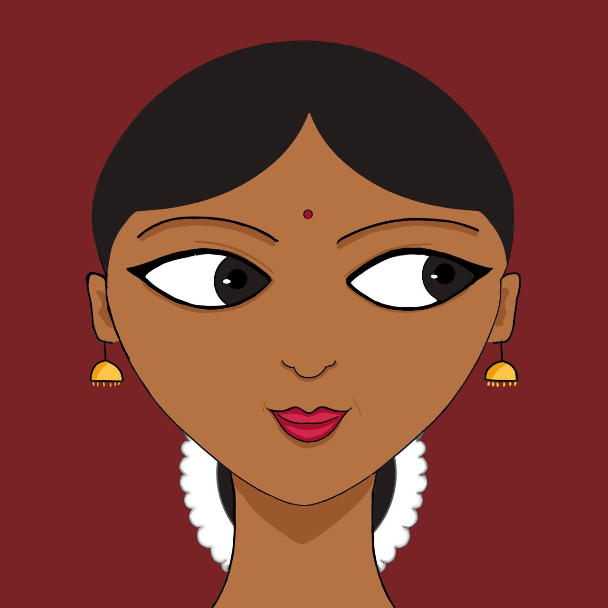

Samam
Looking straight.
Used to show straight glance.
Drishti bheda refers to the eye movements used to express certain bhava. According to the Abhinaya Darpana, there are 8 types of eye movements:
Samam Alokitam Saachi Pralokita Nimeelite
Ullokita Anuvritte cha tatha chaiva Avalokitam
Ithyashtho drishthi bhedaha syu kirtitah purvasuribhi

Looking straight.
Used to show straight glance.
Rotating the eyeballs clockwise and anti-clockwise.
Used to portray intoxication, dizziness, daze, surprise etc.

Looking to one side.
Used to show sly playfulness.
Looking from side to side.
Used to depict watching something from side to side.
Closing the eyes halfway.
Used to denote deep meditation.
Looking up.
Used to look at something above.
Looking up and down.
Used to thoroughly observe a person or a thing.
Looking far and down.
Used to show deep thoughts.
Illustrations and animations by Varnika Bhaskar.